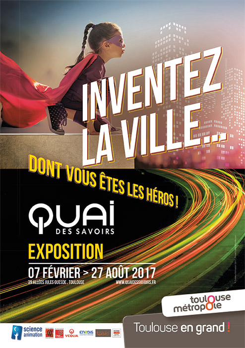

Projets Réalisés
I Wanna Be A Toulousain
Projet réalisé pour le quai des savoirs. Il s'agit d'un runner 2D se passant dans la ville de Toulouse, où l'on peut retrouver des lieux marquants tels que l'église de Saint-Sernin ou le Capitole. Trois niveaux sont disponibles : - Carmes à Esquirol - Esquirol à Capitole - Jeanne d'Arc à Compans Le but étant de passer d'une station à une autre en ramassant des croix occitanes et en esquivant des passants. (Créateurs: Robin Millian & Julien Pinchelimouroux).